Product Decision
Flow Redesign
Turning product desire into purchase confidence — a mobile-first intervention at the moment of commitment.
Mohd Hayaat Ali
INFINITE LOCUS · 2026
Brief Decoding & Selected Flow
The assignment offers three mobile UX flows. I chose to go deep on one rather than shallow across all three.
Audit basis: Since a live Infinite Locus app/product was not provided, I used related Indian mobile fashion commerce PDP patterns as audit references and redesigned the selected Product Decision Flow for the assignment brand.
🔍
Product Discovery
Home → Listing → Filters → PDP
🎯
Product Decision
PDP → Variant Selection → Add to Cart
🚀
Drop Launch
Announcement → Landing → Limited PDP → Cart
Why this flow wins
The brief explicitly calls out that "the experience deteriorates as users move deeper into the funnel" and that "checkout abandonment is high, particularly on mobile." Product Decision is the last moment before conversion — the highest-leverage point to improve. It directly connects to Add-to-Cart rate, the most actionable metric.
Out of scope: Full checkout redesign, PLP/filter redesign, loyalty program, drop-launch infrastructure. These are important but solving decision confidence has the highest immediate ROI.
Assumptions
No live website, analytics, session recordings, or user research was provided. This audit is hypothesis-led — all assumptions are stated explicitly so they can be validated.
| Stated Assumption | Unknown | Evidence Basis |
|---|---|---|
| Most traffic is mobile, often from social/creator posts or drop campaigns | Actual mobile vs. desktop split | Brief: "checkout abandonment high on mobile" |
| Highest PDP hesitation: fit uncertainty, size confusion, delivery timing, return safety | Actual funnel drop-off data | Baymard fashion UX research; market audit |
| Guest checkout exists — adding to bag doesn't require sign-in | Actual auth flow | DTC industry standard |
| Inventory is available at size/variant level, enabling stock messaging | Actual inventory API | Commerce platform capabilities |
| Brand voice: confident, minimal, premium editorial | Full brand guidelines | Brief: "confident, minimal, culturally aware" |
| Redesign must improve Add-to-Bag rate without increasing size-related returns | Current return rate and reasons | Fashion return research (fit is #1 reason) |
| Size guide and delivery info are technically feasible with existing data | Actual CMS / API structure | Standard commerce capabilities |
Experience Audit
Mobile PDP patterns across Indian fashion platforms — what creates desire, and where confidence breaks down.
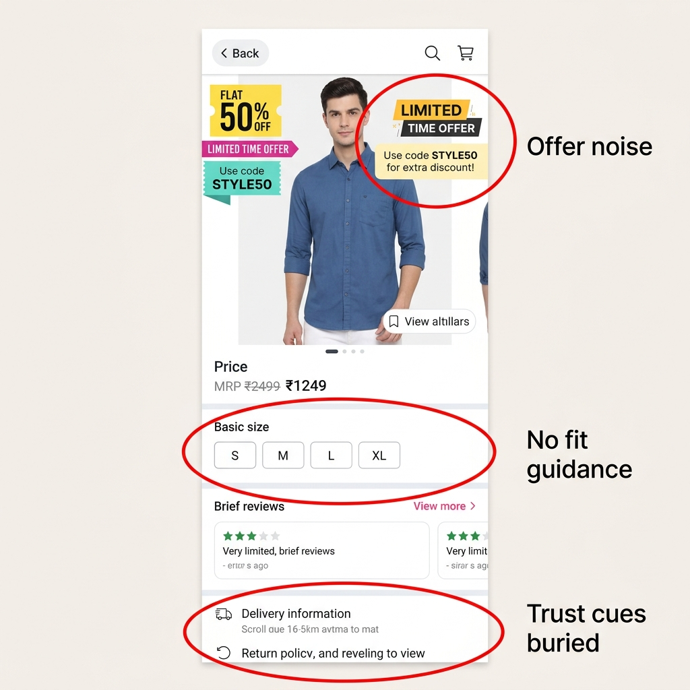
Marketplace PDP — offer-heavy, no fit guidance
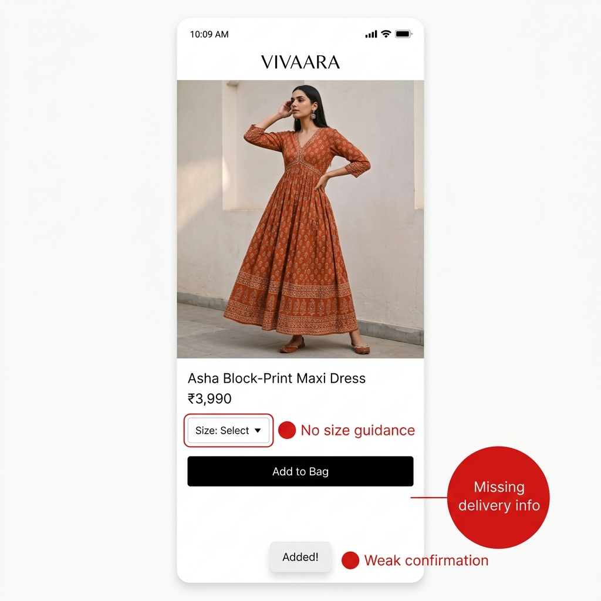
DTC Brand PDP — clean, but trust cues missing near CTA
⚠ Observed Friction
Users guess their size without model measurements, fit type, or recommendation. Size guides open in new pages, losing PDP context.
Delivery date, return policy, and exchange info are buried 3+ scrolls below the CTA — far from the decision moment.
Coupon banners, "X% OFF" badges, and bank offers clutter the first fold. Decision clarity drops under promotional noise.
Add-to-Bag triggers a small toast or redirect. No product summary, no size validation, no clear next step.
✓ Patterns That Work
Full-bleed product imagery creates immediate visual desire. The top of the funnel works well.
Clear CTA placement helps users identify "Add to Bag" or "Buy Now" quickly.
Reviews and ratings provide social proof and trust signals when placed near the action.
Bottom sheet patterns keep users in context during size/variant selection on mobile.
Audit Synthesis
"Desire is visible. Confidence is missing."
Desire Builders
Full-bleed imagery, campaign storytelling, and editorial layout create strong product desire. The top of the funnel works.
Decision Friction
Size uncertainty, missing fit context, and unguided variant selection create hesitation at the moment of commitment.
Trust Gaps
Delivery, returns, and exchange info exist but are positioned too far from the CTA to reduce purchase anxiety.
Missed Recovery
Unavailable sizes, uncertain shoppers, and post-ATB flow lack recovery paths to retain the user.
Behaviour pattern: Users scan imagery first → then look for practical reassurance (fit, delivery, returns). If reassurance is weak or late, they delay, abandon, or order the wrong size — creating returns that erode margin and loyalty.
Evidence: Baymard research shows 46% of fashion returns cite poor fit. Zalando's size recommendation reduced returns by ~10%. The confidence gap is real and measurable.
Journey Context
Where does the Product Decision Flow sit within the shopper's journey?
Phase 1 — Awareness
Desire
Social post, creator content, drop campaign, or homepage editorial catches the eye.
→ Creates attention
Phase 2 — Consideration
Decision ← Focus Area
PDP evaluation: fit, size, price, delivery, returns. Confidence must be built here or the user drops off.
→ Needs confidence
Phase 3 — Acquisition
Conversion
Add to Bag, confirmation, checkout. Momentum from the decision must carry through.
→ Creates conversion
"Desire creates attention. Confidence creates conversion."
Target user: Urban millennial/Gen Z fashion shopper, age 22–34, buying on mobile. Arrives from social or creator content with moderate-to-high intent. They already like the product visually — the page must help them justify and complete the purchase.
The issue is not product desirability.
It is decision confidence at commitment.
User Need
"I love this overshirt — but will it fit me? What if the size is wrong? When will it arrive? Can I return it?"
Business Risk
High PDP drop-off → low Add-to-Bag rate → abandoned carts → size-related returns → eroded margin and loyalty. The brief confirms: "the site struggles to convert this intent-heavy audience."
Why Mobile Worsens It
Small viewports compress info hierarchy. Size guides are painful to navigate. Trust cues scroll off-screen. Decision fatigue hits faster on a thumb-driven interface.
Hypothesis: High-intent mobile shoppers are not dropping off because the product lacks visual appeal. They hesitate because the PDP does not give enough confidence around fit, size, delivery, returns, and confirmation before Add to Bag.
Design Principles
Four lenses guiding every redesign decision. Each wireframe maps back to at least one principle.
🛡️
Confidence Before Commitment
Fit, delivery, and return reassurance must appear before the user is asked to commit.
📌
Keep Users In Context
Bottom sheets, inline selectors, and overlays — never navigate the user away from the product.
📏
Make Sizing Guided
Size selection should be supported with recommendations, model reference, and a recovery path.
✨
Reassurance Near CTA
Delivery date, free exchange, and fit confidence — within thumb reach of "Add to Bag".
Design rule: The product remains the primary visual. The redesign should feel like editorial commerce — monochrome foundation, full-bleed imagery, strong type hierarchy, and deliberate whitespace. Premium, not noisy.
App Flow + User Flow with Fit Confidence
Product Decision Flow: PDP → Variant Selection → Add to Bag
Primary happy path
PDP → Fit preview → Select Size → M recommended
Select M → Add to Bag → Confirmation → Checkout
Best path for high-intent shoppers who accept the recommendation.
Alternate flow: unsure about size
Size Selector → Open Size Guide → Check measurements
See M recommended · 87% match → Select M
The guide recovers hesitation before it becomes abandonment.
Edge flow: size unavailable
Preferred size is disabled and clearly labelled.
Notify Me captures intent instead of creating a dead end.
User can still choose another available size.
This shows how the design handles an unavailable size without losing user intent.
Wireframes
Five-screen product decision flow. Focused on sizing guidance and decision support.
View wireframes in Figma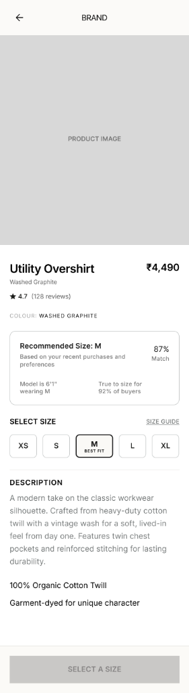
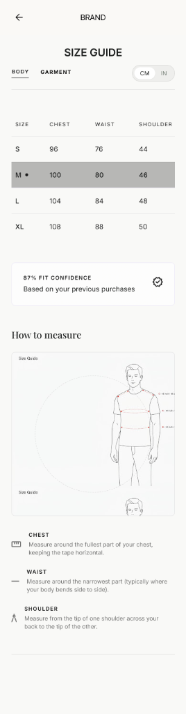
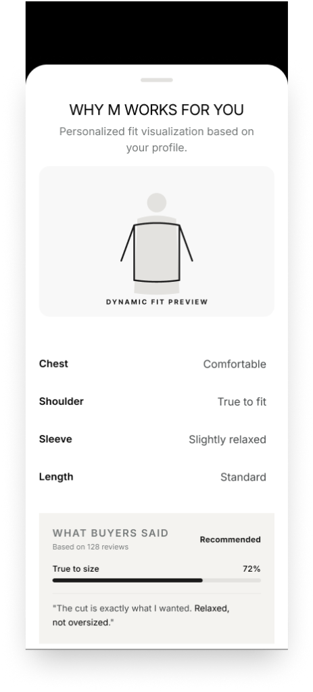
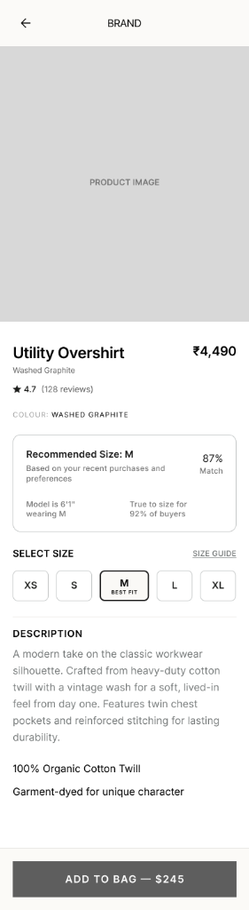
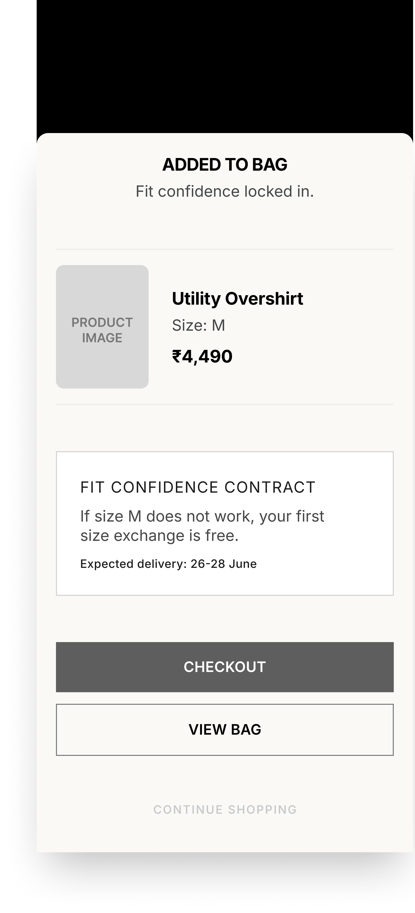
Fit Confidence thread: The "M · 87% match" signal appears in all 5 screens — PDP preview, fit confidence drawer ("Why M"), size guide, selected state, and add-to-bag confirmation. It creates a persistent trust layer across the entire decision journey.
Final UI
Five polished, high-fidelity mobile screens mapping out the entire fit decision flow.
View in Figma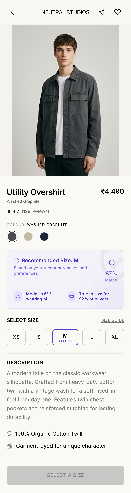
01 PDP with Fit Confidence
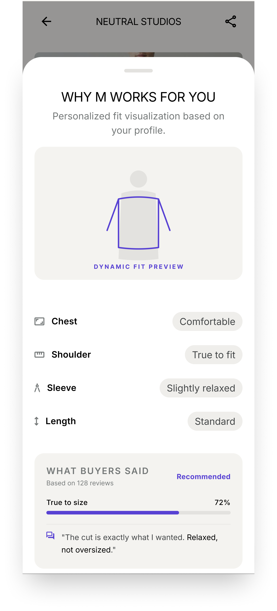
02 Interactive Fit Discovery Sheet
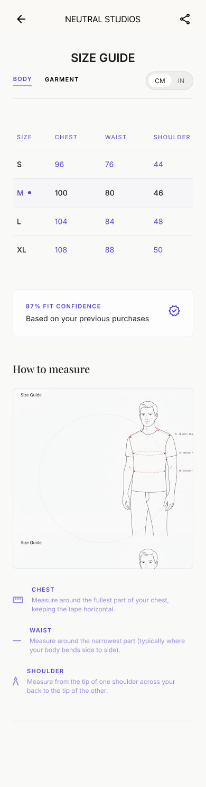
02.1 Size Guide
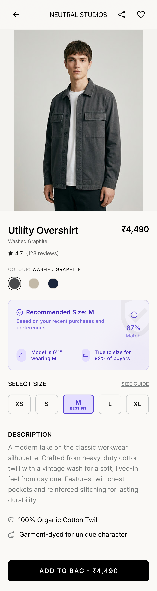
03 Size Selected State
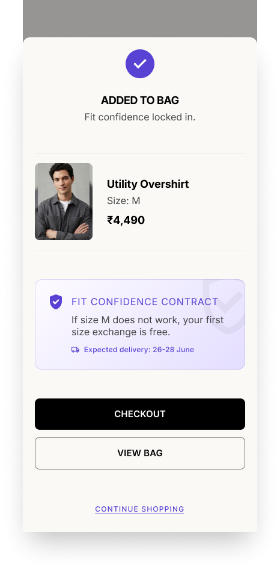
04 Added to Bag Confirmation
Visual direction: Confident editorial commerce — monochrome foundation, one warm accent, full-bleed product imagery, strong type hierarchy, hard-edged controls, minimal elevation, and deliberate whitespace. The product is always the hero.
CONFIDENCE
CONTRACT
The PDP that gives shoppers a confidence contract before they buy.
THE BIG INSIGHT
Size and fit uncertainty is one of the biggest reasons shoppers hesitate. They want to know: Will this fit me? What if it does not?
THE CONCEPT
A decision-support system that combines garment data, model reference, and buyer feedback into a brand-backed exchange promise.
THE PROMISE
Recommended size: M (87% Match)
Backed by: Free size exchange if our recommendation is wrong.
PDP WITH FIT CONFIDENCE
Builds instant trust and reduces size hesitation before commitment.
"WHY THIS SIZE?" SHEET
Explains the recommendation with evidence-based decision signals.
CONFIRMATION CONTRACT
Reinforces confidence and provides a safety net for the transaction.
🔒 Privacy first. No body scan required. Customer trust by design.
*Intended target impact, not guaranteed results.
Turning the PDP from a passive product page into a decision-assurance system that helps shoppers choose confidently and reduces the friction of returns.
Start with rule-based fit logic + review intelligence. Evolve into AI-powered fit prediction and virtual try-on.
How Fit Confidence Is Calculated
The supporting data layer behind the PDP recommendation — where the 87% match comes from.
Framing: This is not part of the PDP itself. It is the lightweight fit profile collected before the recommendation is shown.
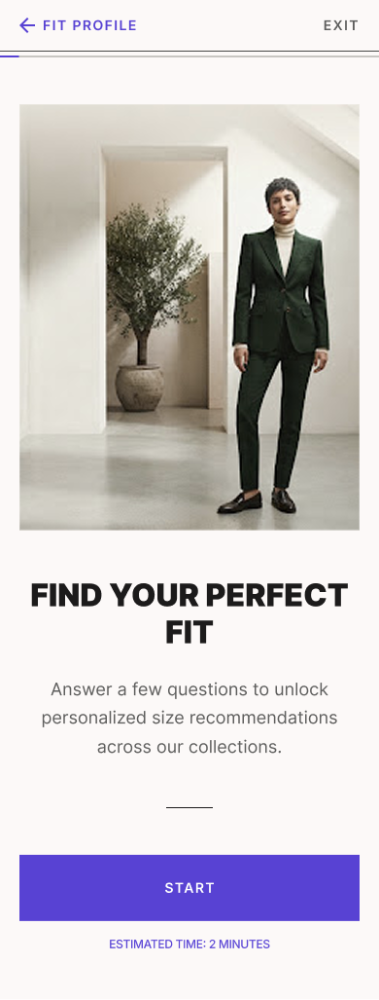
01 · INTRO
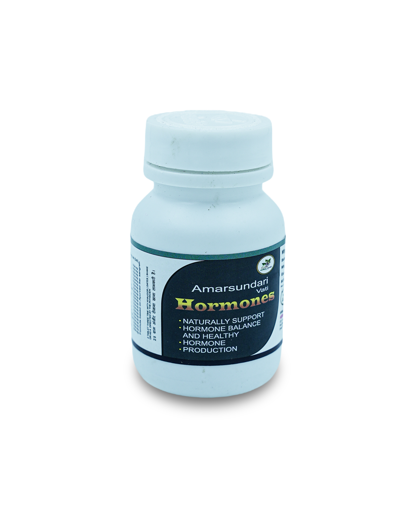
02 · BASIC STATS
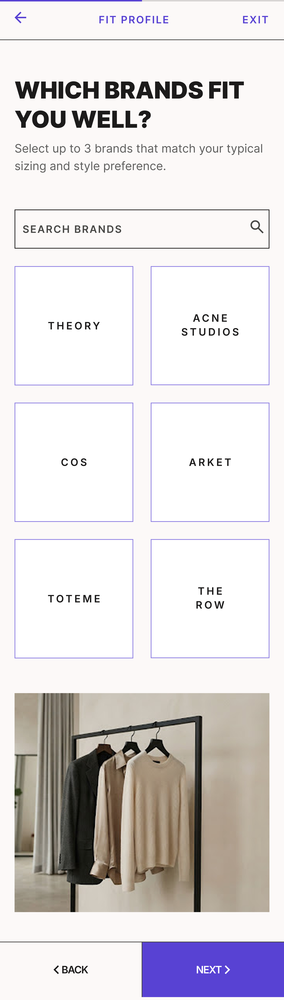
03 · BRAND FIT
04 · FIT PREFERENCE
Scoring Model — 5 Weighted Signals
Example: 31/35 + 19/20 + 12/15 + 8/10 + 17/20 = 87 / 100
Output On PDP
Recommended size: M
Relaxed chest · True shoulder · Safe sleeve
M works for you because
Chest: Comfortable · Shoulder: True to fit · Sleeve: Slightly relaxed · Length: Standard
Backed by free size exchange if recommendation is wrong.
Privacy first. No body scan required. The score is a practical confidence signal — not a perfect body prediction. MVP uses rule-based scoring; evolves toward AI-assisted fit prediction.
Impact & Validation
Proposed metrics and a lightweight usability test plan to validate the redesign.
View in FigmaSuccess Metrics
Guardrails: Size-related return rate and exchange support contacts must not increase.
Usability Test Plan
| Task | Success Signal |
|---|---|
| Identify price, fit, sizes | No prompting needed |
| Choose correct size | Completes without hesitation |
| Recover via size guide | Returns + selects, no context loss |
| Add to bag | Understands confirmation + next step |
Setup: 5 mobile fashion shoppers. Scenario: "You found this overshirt through a creator post. Decide whether it suits you and add the correct size to your bag."
Collect: Transcript quotes, hesitation points, confidence rating (1–5), task completion time, post-task "would you buy" response.
Prioritisation & Next Steps
What to ship now for maximum impact vs. what to experiment with later.
🟡 Ship Now — High Impact, Feasible
⚪ Explore Later — Requires Data
Senior Trade-off
I chose depth at the purchase decision point instead of breadth across the funnel. I used transparent stock info, avoided manufactured urgency. Advanced sizing personalization is a later experiment — not a launch dependency. I would validate all assumptions with analytics, return-reason logs, and usability sessions before rollout.
Final Takeaway
"The redesign should not be judged only by how polished the UI looks. It should be judged by whether it reduces uncertainty at the product decision moment and helps shoppers move from desire to confident Add to Bag."
Business impact: Improving decision confidence supports higher ATB rate, lower PDP drop-off, faster size-selection completion, stronger checkout momentum, fewer avoidable size-related returns, and better repeat purchase confidence.
Mohd Hayaat Ali
INFINITE LOCUS · PRODUCT DECISION FLOW REDESIGN
Thank you for reviewing.